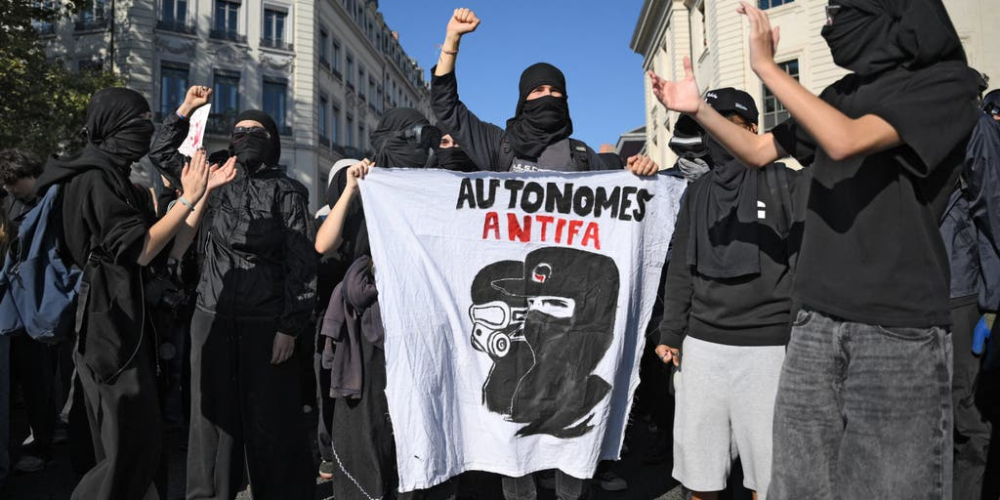
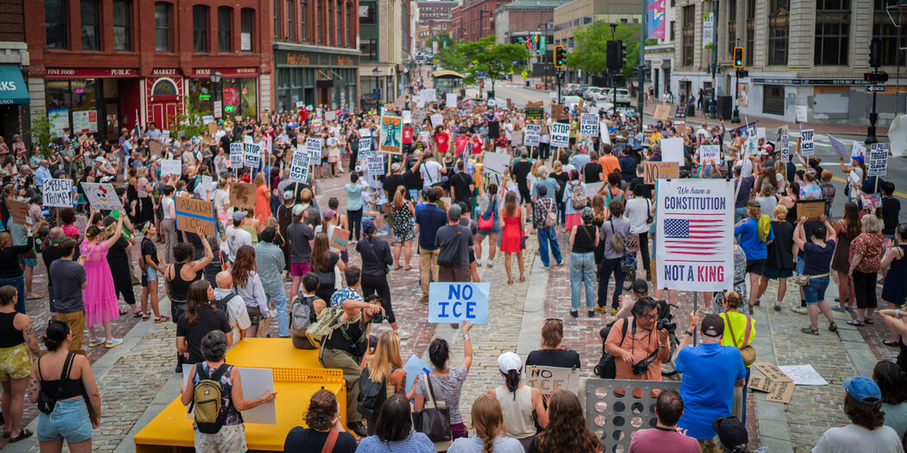
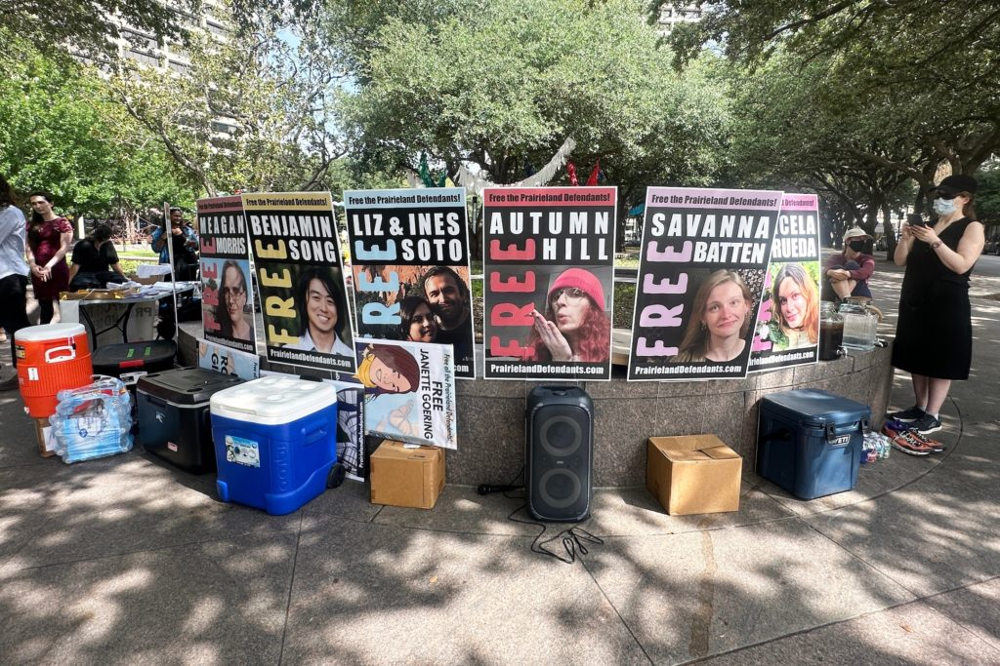
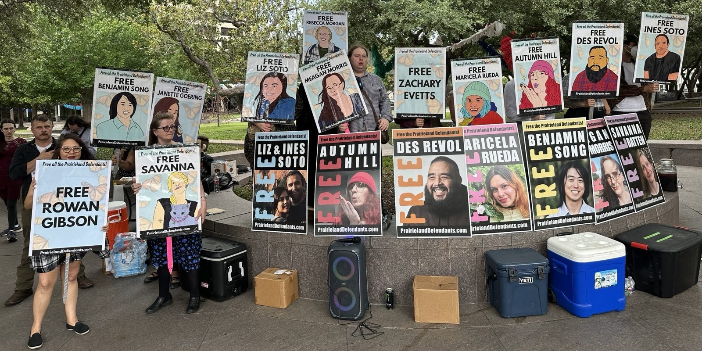
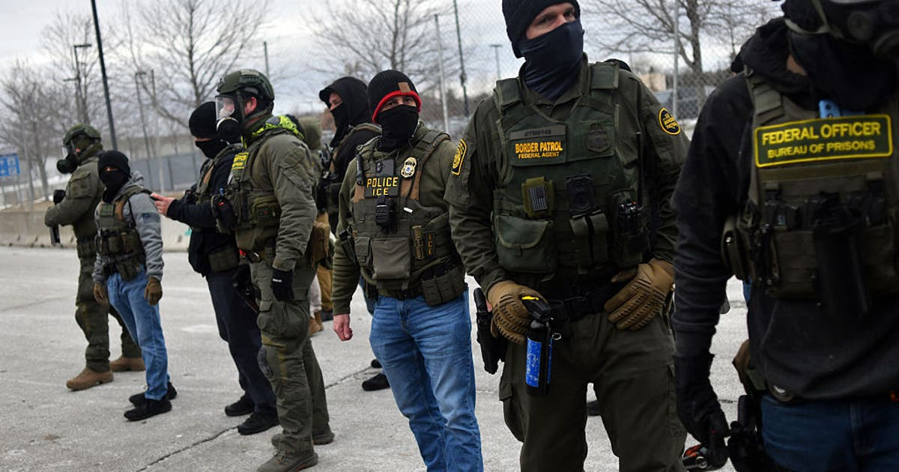
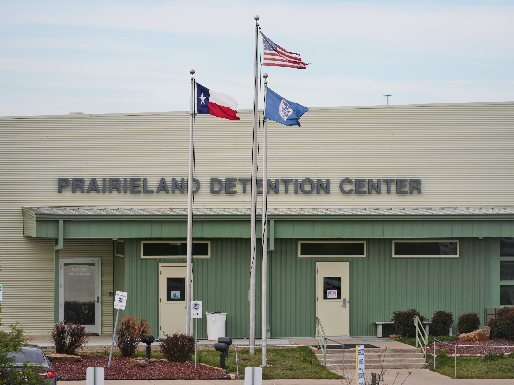
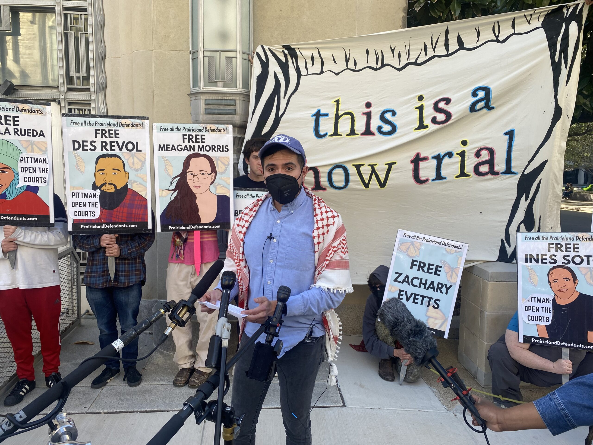
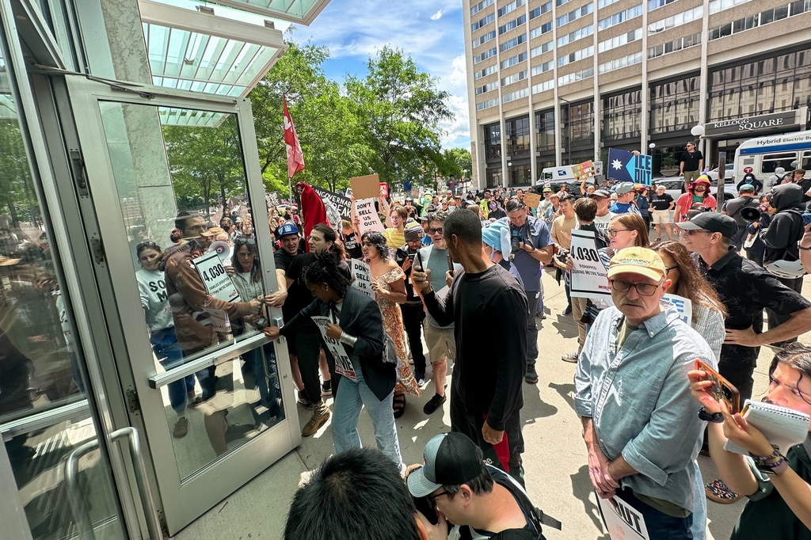
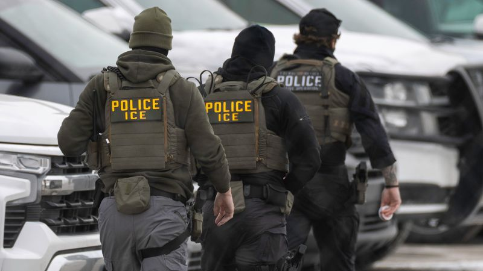

← Back to front pageANTIFAAntifa
13 digest(s) · newest first

Date saved: 2026-10-23 18:00 (PDT)
Sources: PBS NewsHour, El Pais, Star Tribune, Minnesota Lawyer, Vice, Fox News (contrast only), White House, Refuse Fascism
Key findings
Nine Texas protesters sentenced to 30-100 years
In two federal courts, nine protesters received sentences ranging from 30 to 100 years in prison after the Justice Department accused them of being members of the far-left movement Antifa. The sentences exceed the harshest sentence handed to any convicted January 6 rioter. All nine have since received pardons or commutations from President Trump. Five of the defendants pleaded guilty and cooperated with the prosecution, yet testified they and co-defendants were not part of antifa. The case was the first to incorporate new guidance from a presidential declaration labeling Antifa as a domestic terrorist organization. (Source)
DOJ charges 15 in Minnesota with conspiracy to impede ICE
Federal prosecutors charged 15 people in Minneapolis with conspiracy to impede or injure federal officers during the Trump administration's immigration enforcement operation earlier in 2026. The defendants, described by prosecutors as members of groups composed of far-left antifa activists, face charges including conspiracy to impede or injure a federal officer, solicitation to commit a crime of violence, interstate threats, interstate stalking, assault on a federal officer, and destruction of government property. Twelve were arrested, two remained at large, and one was already in custody. (Source)
Minnesota 15 include teachers and union organizers
The so-called Minnesota 15 defendants are teachers, union organizers, and transgender rights activists who pushed back against Operation Metro Surge, according to the Star Tribune. US Attorney Daniel Rosen called the defendants members of Antifa, which Trump designated a domestic terrorist group after the killing of Charlie Kirk. But the Antifa conspiracy case against the Minnesota 15 is part of a larger strategy to crack down on leftist organizations holding what the administration calls 'anti-American' beliefs about immigration, race, and gender. (Source)
Trump designates Antifa as domestic terrorist organization
Trump signed a presidential memorandum in September 2025 designating Antifa as a 'domestic terrorist organization,' directing federal agencies to 'investigate, disrupt, and dismantle' its affiliates and funders. The White House described Antifa as a 'militarist, anarchist enterprise that explicitly calls for the overthrow of the United States Government.' The designation is legally contested because no federal statute creates a domestic terrorist organization category, and Antifa is a decentralized movement, not a single organization. (Source)
French Antifa groups mobilize amid protest bans
Self-described Antifa groups in France are working with a network of communist, socialist, far-left, and anti-Israel groups to mobilize against conservative leader Marine Le Pen's National Rally and to replicate last week's violent riots during nationwide protests called Acte II. A French administrative court overturned a ban on street protests issued by Paris police. French authorities arrested a suspect in the torching of City Hall in Limoges during the previous week's riots. (Source)
Eight North Texas Antifa cell members convicted
Nine people in an alleged armed North Texas 'antifa cell' were convicted earlier in 2026 of conspiring to attack an ICE detention center, in what prosecutors called the first case to incorporate the new domestic terrorism guidance. Most face potential life sentences. The group is scheduled for sentencing in a Fort Worth federal court. (Source)
Administration crackdown spans multiple states
The White House documented actions in Minnesota (15 charged), Oregon (dozens arrested and charged since mid-2025 following prolonged siege against Portland ICE facility), Texas (nine convicted on terrorism charges for armed ambush on ICE detention facility), Washington (multiple convicted on conspiracy charges for attack at Spokane ICE facility), New Jersey (Antifa thugs laid siege to Newark ICE detention center), California (charged in coordinated bombing plot targeting multiple businesses and ICE sites across Southern California), and Indiana (Antifa-linked terrorist sentenced for threats to bomb government buildings and assassinate politicians). (Source)
El Pais reports case prompts accusations of political persecution
The legal case brought by a federal grand jury represents one of the most significant efforts by the Trump administration against activists linked to the alleged antifa movement, according to El Pais. The president designated Antifa a domestic terrorist organization through an executive order, though it is a decentralized network with no national leadership or organizational structure. The defendants face charges including conspiracy to impede or injure federal officers, interstate stalking, and assault on federal officers. (Source)
Vice: legal experts warn domestic terror designation could be abused
Legal experts have warned that adjusting the law to allow for domestic terror designations could open the system to abuse targeting protest groups like antifa or even Black Lives Matter. The State Department's terror designation system currently operates primarily overseas. The 2001 Patriot Act created a definition of domestic terror the FBI uses to open investigations, defined as violent acts intended to intimidate a civilian population, influence government policy by intimidation, or affect government conduct by mass destruction, assassination, or kidnapping. (Source)
 ▶Watch the video on YouTube
▶Watch the video on YouTube ▶Watch the video on YouTube
▶Watch the video on YouTubeThe Trump administration's crackdown on what it labels 'antifa' has moved from executive orders and rhetoric into federal courtrooms and prison cells, and the first major test cases are producing sentences that have stunned civil liberties advocates. Nine anti-ICE protesters in Texas received sentences ranging from 30 to 100 years in prison - longer than the harshest sentences handed to any January 6 Capitol rioter - in what the government describes as the first case incorporating a presidential declaration that labels antifa a domestic terrorist organization.
That designation is itself legally peculiar. Antifa is not a formal organization with leadership or membership rolls - it is a decentralized movement and an umbrella term for far-left militant activists. There is no federal charge of domestic terrorism under existing US law. The Patriot Act defines domestic terrorism for FBI investigative purposes, but the State Department's terrorist designation system operates primarily overseas. Multiple legal experts have warned that expanding the domestic terror designation system could be abused to target protest movements more broadly.
The Minnesota 15 case, the Texas nine, and other prosecutions across Oregon, Washington, New Jersey, and California represent what the administration describes as a coordinated campaign to 'investigate, disrupt, and dismantle' antifa networks. The defendants have pushed back, with some calling the cases political persecution. The Minnesota 15 include teachers, union organizers, and transgender rights activists, according to the Star Tribune. Five of nine Texas defendants pleaded guilty and cooperated with prosecutors, yet testified that they and co-defendants were not part of antifa.
The throughline connects to a larger question about the boundaries of protest and the use of terrorism statutes against domestic political movements. The administration has made clear it views this as a national security priority, and the case law developing from these prosecutions will shape what kind of dissent can be legally characterized as terrorism for years to come. (Source)
Source links

Date saved: 2026-10-23 03:00 (PDT)
Sources: Al Jazeera, The Intercept, PBS NewsHour, Star Tribune, Brennan Center for Justice, The White House, Department of Justice
Key findings
The Prairieland sentences
- Al Jazeera (Jul 1, 2026): Seven more people were sentenced to prison over a protest that culminated in a police officer being shot outside a Texas ICE detention center; six defendants pleaded guilty to providing material support to "terrorism" and received prison terms ranging from nearly two to 15 years; a seventh defendant, Ines Soto, was sentenced to 50 years; a defendant received a 30-year term for merely moving a box full of antifascist zines after the protest; the Trump administration designated Antifa as a "domestic terrorist organisation," and it accused the protest's supporters of being part of an "antifa cell." (Source)
- PBS NewsHour (Jun 24, 2026): In two federal courts, nine protesters received unusually long sentences after the Justice Department accused them of being members of Antifa; sentences ranged from 30 to 100 years in prison, longer than the harshest sentence handed down to any convicted January 6 rioter; the case is the first to incorporate new guidance from a presidential declaration labeling Antifa as a domestic terrorist organization; acting Attorney General Todd Blanche released a statement calling them "antifa terrorists"; Antifa is not a formal organization (it doesn't have a leadership structure or a list of members) and there is no federal charge of domestic terrorism under existing U.S. law. (Source)
The NSPM-7 crackdown and broader prosecutions
- The Intercept (Jun 23, 2026): The lengthy 30-year sentence was among the eight harsh terms handed down by judges in two courtrooms in Fort Worth; the protest that triggered the case came months before the September killing of conservative activist Charlie Kirk, which prompted President Trump to issue an executive order designating Antifa as a domestic terrorism group and a presidential memo dubbed NSPM-7 calling for a broader crackdown on the left; following those directives, federal prosecutors upped the charges facing the Prairieland defendants; the Justice Department hailed the case as "the first sentencing of defendants affiliated with Antifa following President Donald J. Trump's executive order designating the group as a Domestic Terrorist Organization in September 2025." (Source)
The Minneapolis 15 and broader pattern
- Star Tribune (2026): The so-called Minnesota 15 defendants are teachers, union organizers, and transgender rights activists who pushed back against Operation Metro Surge; Minnesota's U.S. Attorney Daniel Rosen called the defendants members of Antifa; this summer's Antifa indictments describe how activists, blending "anarchist and communist views," planned and carried out direct actions including throwing ice blocks at agents and tailing them across the state using vehicles and homemade shields. (Source)
- Brennan Center for Justice (2026): The administration's 2026 counterterrorism strategy lists "Violent Left-Wing Extremists, including Anarchists and Anti-Fascists" as one of the three major types of terrorist groups the U.S. is facing, alongside drug cartels and the likes of al-Qaeda and ISIS; the office charged 38 people under Section 111 of Title 18 of the U.S. Code, which makes it a crime to assault or forcibly impede a federal officer; 20 of these cases have been resolved so far, with 19 dismissed and one defendant pleading guilty to a reduced charge. (Source)
Administration framing
- The White House (Jun 2026): The Trump Administration has made it clear that "Antifa terrorists and their networks will be investigated, disrupted, prosecuted, and neutralized with the full force of federal law"; charges were announced in Minnesota, Oregon, Texas, Washington, New Jersey, California, and Indiana; in Oregon, dozens of Antifa militants have been arrested and charged since mid-2025 following their prolonged siege against the Portland ICE facility; in Texas, nine members of a North Texas Antifa cell were convicted on terrorism-related charges. (Source)
▶Watch the video on YouTube  ▶Watch the video on YouTube
▶Watch the video on YouTubeThe Trump administration's designation of Antifa as a "domestic terrorist organization" in September 2025 (and the follow-on application of that designation through prosecutions), is the most significant test of how far the federal government can go in treating a political movement as a terrorist entity under U.S. law. The legal architecture is thin: there is no federal charge of domestic terrorism under existing U.S. law, and Antifa is a decentralized movement without a leadership structure, membership rolls, or a command hierarchy, attributes that the word "organization" ordinarily implies. What the designation does, in practice, is direct joint terrorism task forces to investigate and disrupt networks associated with political violence on the left, and shape the charges and sentencing recommendations that federal prosecutors bring.
The Prairieland case in Texas is the first major test case. In July 2025, activists gathered outside an ICE detention facility to protest mass deportation operations; in June 2026, nine defendants received sentences ranging from 30 to 100 years (longer than the harshest sentence handed down to any convicted January 6 rioter. One defendant received 30 years for moving a box of antifascist zines after the protest. The Brennan Center describes this as the administration's strategy of "using the antifa-terrorism narrative to maximize the scope and severity of punishment." The throughline is that the legal mechanism for treating a decentralized political movement as a terrorist organization is mostly directive and prosecutorial rather than statutory), which means the check on it is political, not legal. What to watch next is how the courts handle the Minneapolis case, in which 15 people connected to Direct Action Minnesota have been charged under a statute criminalizing conspiring to prevent a federal officer from doing their job "by force, intimidation, or threat," and whether the 38 people charged under Section 111 of Title 18, 19 of whose cases have been dismissed, is a sign that the aggressive theory is meeting legal resistance.
Source links

Date saved: 2026-10-22 18:00 (PDT)
Sources: NPR, Political Research, Salt Lake Tribune, The Center Square, White House (official release), PBS NewsHour, FOX 9 Minneapolis-St. Paul
Key findings
Prairieland: the first major test case
- In March 2026, a federal jury in Texas delivered guilty verdicts to nine defendants (known as the Prairieland Defendants) on charges including riot, attempted murder of a police officer, conspiracy to use and carry explosives, and material support for terrorism; one defendant received a 100-year prison term for attempted murder, and seven others received sentences ranging from 30 to 70 years, in what is the first test case for the Trump administration's September 2025 executive order designating Antifa as a domestic terrorist organization and NSPM-7. (Source)
- The Prairieland case built its case on events that occurred during a July 4, 2025, noise demonstration at the Prairieland ICE Detention Center in Alvarado, Texas; activists set off fireworks as part of the demonstration, and a few separated from the group to vandalize cars, slash tires on a government van, and break a surveillance camera. The government referred to the group as a "Northwest Texas Antifa cell." (Source)
- Eight protesters were sentenced to prison terms as long as 100 years after a violent protest outside the Prairieland ICE detention center; the Trump administration has deployed allegations of terrorism against protesters at an unprecedented scale. (Source)
Minneapolis and the expanding crackdown
- The Department of Justice charged 15 people in Minneapolis in connection with an alleged Antifa plot to impede federal officers during Operation Metro Surge, with charges including conspiracy to impede a federal officer, interstate stalking, interstate threats, solicitation to commit a crime of violence, multiple counts of assault on a federal officer, and destruction of government property; the 15 returned to federal court in Minneapolis on October 20, 2026, for a hearing on motions including what evidence could be used at trial. (Source)
- The DOJ says those charged include members of groups it describes as "Antifa," including Direct Action Minnesota, and alleges they sought to infiltrate peaceful protests and turn the crowd violent; all have pled not guilty and were released without bond. (Source)
- Prosecutors in Minnesota brought charges against 15 people accused of impeding federal officers as part of an alleged Antifa plot; other cases like that have been dismissed recently, and legal experts note that it is First Amendment-protected to protest, to have signs, and to chant. (Source)
The legal status of the Antifa designation
- President Trump signed an executive order in September 2025 designating Antifa as a "domestic terrorist organization," describing it as a "militarist, anarchist enterprise that explicitly calls for the overthrow of the United States government"; legal experts say the designation "does nothing" in legal effect because Congress has never created a statutory scheme for designating domestic terrorist organizations, the designation is "just a label" that sends a message but carries no criminal penalty. (Source)
- The US State Department officially designated four foreign Antifa groups as foreign terrorist organizations in November 2025, nearly two months after Trump's domestic designation; the designations paved the way for the State Department to target individuals or groups by cutting off or freezing their access to global financial systems. (Source)
- In May 2026, multiple Antifa insurgents were convicted on federal conspiracy charges for their roles in a violent attack at a Spokane, Washington, ICE facility; in May, an Antifa group violently laid siege to a Newark, New Jersey, ICE detention center, resulting in dozens of arrests and federal charges; in December 2025, Antifa extremists were charged in a coordinated bombing plot targeting multiple businesses, ICE agents, vehicles, and other sites across Southern California. (Source)
- Guests on PBS NewsHour argued that the case represents a dangerous expansion of terrorism-related charges against political activists, warning that "Americans are being given de facto life sentences for protesting their government" and that "the fascism you worried about is here." (Source)
 ▶Watch the video on YouTube
▶Watch the video on YouTube ▶Watch the video on YouTube
▶Watch the video on YouTubeThe Trump administration's crackdown on what it calls "Antifa" has produced its first major test cases (and the results are now producing convictions, decades-long sentences, and a legal debate about whether the administration's approach is constitutional. In March 2026, a federal jury in Texas convicted nine members of a North Texas Antifa cell on terrorism-related charges for their roles in a July 4, 2025, protest at the Prairieland ICE Detention Center in Alvarado, Texas; one defendant, former US Marine Corps Reservist Benjamin Song, was convicted of attempted murder and received a 100-year prison term, and seven others received sentences ranging from 30 to 70 years) longer than the harshest sentence handed down to any convicted January 6 rioter. The Prairieland Defendants are the first test subjects for two federal policies announced in September 2025: an executive order designating Antifa as a domestic terrorist organization, and National Security Presidential Memorandum-7 (NSPM-7), which directed federal agencies to investigate and disrupt protesters engaging in anti-capitalism, anti-fascism, and anti-Americanism.
Legal experts are skeptical that the executive order has any real legal effect (Congress has never created a statutory scheme for designating domestic terrorist organizations, so the designation is, in the words of one legal expert, "just a label" that "has no legal effect" and "there is no crime associated with being labeled by the president a domestic terrorist organization." But the administration is clearly using the label to justify a broader use of terrorism charges against political activists) and the DOJ has charged 15 people in Minneapolis in connection with an alleged Antifa plot to impede federal officers during Operation Metro Surge, with a hearing on evidence admissibility held on October 20, 2026. The case is being watched closely as a test of whether the administration's framework can be applied consistently, and whether the First Amendment protections for protest will hold up in court.
Source links

Date saved: 2026-10-22 03:00 (PDT)
Sources: PBS NewsHour, The New York Times, Al Jazeera, El Pais, Star Tribune, The Intercept, Yahoo News, Minneapolis Star Tribune
Key findings
Texas Prairieland: 450 years combined, first case under antifa domestic terrorism designation
- PBS NewsHour (Jun 24, 2026): In two federal courts, a group of protesters received unusually long sentences after the Justice Department accused them of being members of the far-left movement Antifa. The sentences range from 30 to 100 years in prison, longer than the harshest sentence handed down to any of the convicted rioters in the January 6 attack on the US Capitol in 2021. All of those people have since received pardons or commutations from President Trump. These nine protesters were arrested after they demonstrated outside a migrant detention facility in Texas last year. During the protest, a police officer was shot in the neck. He survived. Their case is the first to incorporate new guidance from a presidential declaration last year that labels Antifa as a domestic terrorist organization. That's despite the fact that Antifa is a decentralized movement, not a single organization, and that there is no federal charge of domestic terrorism under existing US law. More significantly, five of the alleged Antifa members pled guilty and supported the prosecution. (Source)
- The New York Times (Jun 23, 2026): The leader of a group of protesters accused of being members of the far-left movement antifa was sentenced to 100 years in prison after a jury found him and seven other demonstrators guilty of supporting terrorism while taking part in an armed assault last summer against an immigration facility in Alvarado, Texas. The extraordinary sentence against the protester, Benjamin Song, was only one of the harsh penalties meted out in the case. Nine young demonstrators, including Mr. Song, were found guilty in March of an array of charges stemming from the attack on the Immigration and Customs Enforcement facility. Six of the defendants who were convicted of terrorism charges along with Mr. Song were sentenced to between 50 and 70 years in prison. Another, who was found guilty of lesser crimes and was not even present at the protest, was given a term of 30 years in prison. The sentencings in Fort Worth appeared to be a clear signal that, at least in Texas, the courts would deal aggressively with ICE protesters, especially those accused of adhering to the leftist ideology of antifa. (Source)
- Al Jazeera (Jul 1, 2026): Seven more people have been sentenced to prison over a protest that culminated in a police officer being shot outside an immigration detention center last year. Six of the defendants in Wednesday's sentencing hearing had pleaded guilty to providing material support to "terrorism" and received prison terms ranging from nearly two to 15 years. A seventh defendant, Ines Soto, was sentenced to 50 years in prison after being convicted of "providing material support to terrorists," as well as charges related to rioting and conspiracy to carry an explosive. The protest took place on the night of July 4, 2025, at Prairieland Detention Center near Dallas, Texas. Activists had gathered outside Prairieland to denounce President Donald Trump's push for mass deportation. The Trump administration has described the protest as an act of "terrorism," and 19 people were ultimately arrested. On June 23, the eight defendants who chose to stand trial were handed lengthy prison terms. Song was sentenced to 100 years in prison after being convicted of attempted murder in the shooting. The seven others received sentences ranging from 30 to 70 years. They received a combined 450 years in prison. (Source)
- The Intercept (Jun 23, 2026): Daniel Sanchez Estrada wasn't accused of attempted murder or material support of terrorism after a protest turned catastrophically wrong outside an ICE detention center in Alvarado, Texas. He was merely convicted of obstructing the investigation by moving a box full of antifascist zines after the protest. Instead, Judge O'Connor gave Sanchez Estrada a 30-year term. The lengthy sentence was among the eight harsh terms handed down by judges in two courtrooms in Fort Worth on Tuesday. Sanchez Estrada, who was not at the protest, was convicted of corruptly concealing a document or record and conspiracy to conceal documents. In a press release, the Justice Department hailed the case as "the first sentencing of defendants affiliated with Antifa following President Donald J. Trump's executive order designating the group as a Domestic Terrorist Organization in September 2025." (Source)
Minnesota 15: teachers, union organizers, trans activists charged in ICE protest conspiracy
- El Pais (Jun 17, 2026): Fifteen people were charged on Tuesday with being part of an alleged organized network that sought to interfere with federal immigration operations, in a case that has already prompted accusations of political persecution. The legal case, brought by a federal grand jury, represents one of the most significant efforts so far by Donald Trump's administration against activists linked to the alleged antifa movement, a decentralized network of antifascist groups with no national leadership or organizational structure, which the president designated a domestic terrorist organization through an executive order signed last year. The defendants face charges including conspiracy to impede or injure federal officers, interstate stalking, solicitation to commit violent crimes, assault on federal officers, and destruction of government property. Twelve of them were arrested on Tuesday, one was already in custody, and two remain at large. The indictment alleges that the activists used encrypted messaging applications, rapid-response networks, and surveillance groups to monitor immigration agents, share information about enforcement operations, and organize blockades around the Whipple Federal Building, one of ICE's main operational hubs in Minneapolis. (Source)
- Star Tribune (2026): The so-called Minnesota 15 defendants are teachers, union organizers and transgender rights activists who pushed back against Operation Metro Surge. Minnesota's US Attorney Daniel Rosen called the defendants members of Antifa, which President Donald Trump designated a domestic terrorist group after the killing of Charlie Kirk. This summer's Antifa indictments describe how activists, blending "anarchist and communist views," planned and carried out direct actions, including throwing ice blocks at agents and tailing them across the state, using vehicles and homemade shields to block roads around the Bishop Henry Whipple Federal Building. Fourteen defendants pleaded not guilty before being released back to their homes. Hanging over them is the recent sentencing of eight members of an accused Antifa cell to a combined 450 years in prison for an attack on the Prairieland ICE detention center in Texas. (Source)
- PBS NewsHour (2026): Federal prosecutors have charged 15 people with impeding the Trump administration's massive immigration crackdown in Minnesota earlier this year, accusing them of coordinating efforts to block arrests and deportations as part of a conspiracy against the US government. During a news conference Tuesday, Minnesota US Attorney Daniel N. Rosen said the monthslong investigation had focused on members and associates of two activist groups that had "violently opposed the enforcement of federal law." He characterized the groups as "antifa," an umbrella term for a diffuse movement of militant left-wing activists. The arrests come as the Trump administration has escalated its crackdown on members of "antifa," which it labeled a domestic terror group and directed federal agencies to "investigate, disrupt, and dismantle" its affiliates and funders. In March, eight people accused of having ties to antifa were convicted on terrorism charges in a Texas shooting, a first of its kind case that raised concerns among some civil liberties groups. The 15 people charged Tuesday were part of "Direct Action Minnesota," a left-wing coalition of protest groups. (Source)
- Yahoo News (2026): Fifteen people charged in connection with anti-ICE protests in Minneapolis are due back in federal court. During the peak of Operation Metro Surge, tens of thousands of Minnesotans demonstrated peacefully against the federal government's immigration crackdown. The Department of Justice has charged 15 people with a variety of crimes in connection with the protests. According to the DOJ, those charged include members of groups the federal government describes as "Antifa," including Direct Action Minnesota. Prosecutors accuse them of infiltrating peaceful protests with the intent of turning the crowd violent. Those charged are due in court for a hearing as the judge considers a number of motions, including what evidence could be used at trial. (Source)
The legal theory and the civil liberties challenge
- PBS NewsHour (Jun 24, 2026): The case is the first to incorporate new guidance from a presidential declaration last year that labels Antifa as a domestic terrorist organization. That's despite the fact that Antifa is a decentralized movement, not a single organization, and that there is no federal charge of domestic terrorism under existing US law. President Trump has labeled it a domestic terrorist organization. Now, there is such a thing as a foreign terrorist organization, but the law doesn't provide any classification for domestic terrorist organizations. (Source)
- NPR / Code Switch (Jul 14, 2026): This summer, protesters connected to a demonstration outside the Prairieland ICE detention center in North Texas were sentenced to as much as 100 years in prison. It's the first case prosecuted under President Trump's National Security Presidential Memorandum 7, which targets "extremism on migration, race, and gender" and classifies antifa as a domestic terrorism organization. Champagne Singleton was the person sentenced to 100 years in federal prison and was found guilty of being the person to shoot this police officer. Champagne was the only protester convicted of a violent crime. The Sotos received 50 years in prison each. The remaining 12 defendants' sentences ranged from 22 years to 70 years and included people who were not physically at the protest. Under the executive order, the Trump administration has classified Antifa, a decentralized leaderless anti-fascism movement, as a domestic terrorism organization. (Source)
- Legal AF / Court Accountability (Jun 2026): Two ACLU alums unpack the Prairieland case: the first federal terrorism prosecution built on Trump's 2025 executive order branding "Antifa" a domestic terrorist group. Nine Texas activists were sentenced to 30-100 years after a 2025 ICE-facility protest turned violent, even though prosecutors admitted at trial the group was, at most, a loose collection of DFW anarchists and socialists. "This is the first ever federal terrorism case that was built around the Antifa label." (Source)
- 30 Years In Prison For Moving a Box (Jun 2026): Eight activists have been sentenced to a staggering 450 years in prison under federal terrorism charges following an anti-ICE protest in Texas. From a 30-year sentence for simply moving a box of pamphlets to a 100-year term for a former Marine, prosecutors weaponized executive orders and fringe "expert" testimony to turn political dissent into domestic terrorism. Well, in September 2025, Trump signed an executive order designating Antifa as a domestic terrorist organization. The problem is no such organization exists and there is no legislative framework to designate domestic terrorist organizations in the US, meaning Trump's executive order is without legal basis. (Source)
 ▶Watch the video on YouTube
▶Watch the video on YouTube ▶Watch the video on YouTube
▶Watch the video on YouTubeThe antifa story in 2026 is not about street protests (it is about a legal architecture being built to turn a decentralized political tendency into a prosecutable category. The throughline runs from Donald Trump's September 2025 executive order designating "antifa" as a domestic terrorist organization (a designation that has no statutory basis), there is no federal charge of domestic terrorism under existing US law, and antifa is a movement, not an organization) through the first prosecution built on that designation to the sentencing of activists to decades in prison. The Prairieland case in Texas is the test case: nine protesters arrested after demonstrating outside a migrant detention facility, during which a police officer was shot in the neck. The sentences ranged from 30 to 100 years, longer than the harshest sentence handed down to any convicted rioter in the January 6 Capitol attack, all of whom have since received pardons or commutations from Trump.
The most important legal fact in this entire story is that five of the alleged antifa members in the Texas case pled guilty and supported the prosecution, and one defendant (Daniel Sanchez Estrada) was not even at the protest (he was convicted of obstructing the investigation by moving a box full of antifascist zines after the protest and sentenced to 30 years. The Minnesota 15 case, where 15 people), described by prosecutors as teachers, union organizers, and transgender rights activists, were indicted on charges including conspiracy to impede federal officers, interstate stalking, and assault on a federal officer during Operation Metro Surge, is the second major test of whether the "antifa" designation can be used to criminalize political organizing that blends peaceful protest with direct action. The defendants include people who "pushed back against Operation Metro Surge" while tens of thousands of Minnesotans demonstrated peacefully, the prosecution's theory is that activists infiltrated peaceful protests with the intent of turning the crowd violent.
What to watch next: the Minnesota 15 hearing on what evidence can be used at trial, including whether the Department of Homeland Security improperly investigated First Amendment-protected activity without evidence that the targets had committed a crime; whether the Texas case's use of the "antifa" label as a terrorism predicate produces any appellate ruling on the legal validity of the designation; and whether additional prosecutions under NSPM-7 (the presidential memo calling for a broader crackdown on the left) follow the Minnesota and Texas patterns.
Source links

Date saved: 2026-10-21 18:00 (PDT)
Sources: PBS NewsHour, The Intercept, Brennan Center, Minneapolis Star Tribune, El Pais, Common Dreams, Political Research Weekly, Charity & Security Network, Fox 9, Turley Clips, No Future, Journal l'Humanité, Amnesty International UK
Key findings
Prairieland Defendants: 30 to 100-year sentences for anti-ICE protest
On June 23, 2026, the Prairieland Defendants were sentenced in Fort Worth, Texas, for their participation in a July 4, 2025 noise demonstration at the Prairieland ICE detention center. Benjamin Song, who fired a gun at a police officer, was sentenced to 100 years. Daniel Sanchez Estrada, convicted only of obstructing the investigation by moving a box full of antifascist zines after the protest, received 30 years. Other defendants received sentences ranging from 30 to 70 years, for convictions including corruptly concealing a document, rioting, providing material support to terrorists, and use and carry of an explosive. The DOJ hailed the case as "the first sentencing of defendants affiliated with Antifa following President Donald J. Trump's executive order designating the group as a Domestic Terrorist Organization in September 2025." Eight defendants were convicted in March 2026 and another eight were sentenced in early July, four of whom became prosecution witnesses and received shorter sentences. (Source)
Minnesota 15: Anti-ICE protesters charged under NSPM-7
Fifteen people were charged in June 2026 in connection with anti-ICE protests during Operation Metro Surge in Minnesota. The defendants (teachers, union organizers, and transgender rights activists) are accused of being members of or associated with Direct Action Minnesota, a group federal prosecutors say used demonstrations against ICE to coordinate actions aimed at obstructing federal agents. Charges include conspiracy to impede or injure federal officers, interstate stalking, solicitation to commit violent crimes, assault on federal officers, and destruction of government property. The Justice Department has brought several waves of charges against Minnesotans for their actions during Operation Metro Surge, the nation's largest-ever immigration enforcement blitz. The case represents one of the most significant efforts by the Trump administration against activists linked to the antifascist movement. (Source)
Trump's antifa designation: no legal basis under U.S. law
In September 2025, President Trump issued an executive order purporting to designate "Antifa" as a domestic terrorist organization, along with National Security Presidential Memorandum 7 (NSPM-7). Together, these directives drive a campaign to investigate and prosecute almost anyone who opposes the administration's policies. NSPM-7 instructs federal law enforcement to investigate and prosecute individuals and groups involved in this campaign, pointing agencies to a swath of what it identifies as antifascist ideologies, including "anti-Americanism, anti-capitalism, and anti-Christianity; support for the overthrow of the United States Government; extremism on migration, race, and gender; and hostility towards those who hold traditional American views on family, religion, and morality." The executive order had no legal basis, there is no process for designating domestic terrorist groups under U.S. law, and "antifa" is not an organized group but an ideology. (Source)
2026 counterterrorism strategy: "Violent Left-Wing Extremists" listed alongside ISIS
The administration's 2026 counterterrorism strategy lists "Violent Left-Wing Extremists, including Anarchists and Anti-Fascists" as one of the three major types of terrorist groups that the U.S. is facing, alongside drug cartels and the likes of al-Qaeda and ISIS. This is a first in U.S. counterterrorism strategy. The Brennan Center documented that both the FBI and DHS have routinely branded protesters as "Antifa" and terrorists, often exaggerating the gravity of small-bore offenses and pushing for maximal punishment. (Source)
PBS NewsHour: Sentences longer than January 6 rioters, all since pardoned
The sentences handed down to the Prairieland Defendants (30 to 100 years) are longer than the harshest sentence handed down to any of the convicted rioters in the January 6th attack on the U.S. Capitol in 2021. All of those January 6 defendants have since received pardons or commutations from President Trump. The contrast between the severity of the anti-ICE protest sentences and the pardons granted to January 6 rioters has drawn attention from legal observers and civil liberties advocates. (Source)
France: Death of neonazi used to condemn antifascist movement
Following the death of Quentin Deranque, a militant neonazi at Lyon, a large part of the French political class and media have firmly condemned the antifascist movement, La France Insoumise, and the broader left. Yet the National Anti-Terrorism Prosecutor's Office has dissolved several far-right groups on terrorism grounds. Journal l'Humanité noted the asymmetry: in 2025, even though the Paris police prefect had ordered the arrest of protesters and organizers marching with masked faces during the C9M neo-Nazi march, the riot police were mostly busy pushing back anti-fascists, even if it meant crashing into them. Antifascism, the publication noted, means monitoring, gathering intelligence on far-right groups, preventing their attacks, alerting cultural venues where they appear, and protesting. (Source)
Germany: 1,200 antifa protest Maja T. sentencing in Jena
On February 15, 2026, 1,200 antifa took to the streets in Jena, Germany (Maja T.'s hometown) to protest the Budapest court verdict that sentenced Maja to 8 years in prison. The protest documented clashes with police and on-street searches. The case reflects the transnational dimension of antifascist solidarity and the criminalization of left-wing activism in Europe. (Source)
UK: Crackdown on protest escalates under Crime and Policing Act 2026
Amnesty International UK released a documentary, "The Fight to be Heard," charting the changing landscape of protest in Britain. From record-breaking prison sentences for peaceful protesters to fears of surveillance and criminalization, the documentary examines the growing pressures faced by protesters. Successive governments have responded by introducing sweeping new powers through the Police, Crime, Sentencing and Courts Act 2022, the Public Order Act 2023, and now the Crime and Policing Act 2026. The Labour government escalated the crackdown further, proscribing Palestine Action as a terrorist organization in 2025, peaceful protesters supporting the group now face terrorism charges, with around 3,000 people currently affected. (Source)
El Pais: Minnesota charges described as political persecution
Spanish outlet El Pais reported that the legal case brought by a federal grand jury in Minnesota "represents one of the most significant efforts so far by Donald Trump's administration against activists linked to the alleged antifa movement, a decentralized network of antifascist groups with no national leadership or organizational structure, which the president designated a domestic terrorist organization through an executive order signed last year." The report noted that the case "has already prompted accusations of political persecution." (Source)
Charity & Security Network: First conviction under material support terrorism charges
On March 13, 2026, a federal jury convicted nine activists for material support to terrorism under 18 U.S.C. § 2339A for actions stemming from a "noise demonstration" outside an ICE facility in Prairieland, Texas, on July 4, 2025. This EO had no legal basis, as there is no process for designating domestic terrorist groups under U.S. law, and "antifa" is not an organized group, but rather an ideology. The government has largely won its first case bringing material-support-for-terrorism charges against protesters alleged to belong to "antifa." (Source)
▶Watch the video on YouTube  ▶Watch the video on YouTube
▶Watch the video on YouTubeThe Trump administration's designation of "antifa" as a domestic terrorist organization (an executive order with no legal basis under U.S. law, since there is no process for designating domestic terrorist groups and "antifa" is not an organized group but an ideology) has produced a series of prosecutions that are testing the limits of the DOJ's authority and the tolerance of the federal courts. The Prairieland Defendants in Texas and the Minnesota 15 are the two most significant cases, and they represent the first major test of a policy that the Brennan Center calls "a campaign to investigate and prosecute almost anyone who opposes the administration's policies."
The Prairieland case is particularly stark. On July 4, 2025, a group of activists organized a noise demonstration with fireworks at the Prairieland ICE detention center in Alvarado, Texas. One protester shot and wounded a police officer. Nineteen people were eventually arrested. In March 2026, a federal jury convicted nine activists of material support to terrorism under 18 U.S.C. § 2339A for actions stemming from the protest. On June 23, 2026, sentences were handed down: Benjamin Song, who fired a gun at a police officer, received 100 years; Daniel Sanchez Estrada, who was convicted only of obstructing the investigation by moving a box of antifascist zines after the protest, received 30 years. The sentences ranged from 30 to 100 years, longer than the harshest sentence handed down to any of the convicted rioters in the January 6th attack on the U.S. Capitol in 2021. All of those January 6 defendants have since received pardons or commutations from President Trump.
The Brennan Center has documented that the administration's approach (Executive Order designating Antifa as a domestic terrorist organization plus NSPM-7) "drives a campaign to investigate and prosecute almost anyone who opposes the administration's policies." The 2026 counterterrorism strategy doubles down, listing "Violent Left-Wing Extremists, including Anarchists and Anti-Fascists" as one of the three major types of terrorist groups the U.S. is facing, alongside drug cartels and al-Qaeda/ISIS. The DOJ has routinely branded protesters as "Antifa" and terrorists, often exaggerating the gravity of small-bore offenses and pushing for maximal punishment.
Meanwhile, in France, the death of Quentin Deranque (a militant neonazi killed in Lyon) has been used by a large part of the political class and media to condemn the antifascist movement, La France Insoumise, and the broader left. The response has been asymmetrical: the National Anti-Terrorism Prosecutor's Office has dissolved several far-right groups on terrorism grounds, yet antifascist protesters have been the ones pushed back by riot police during counter-protests against neo-Nazi marches.
Source links

Date saved: 2026-10-21 03:00 (PDT)
Sources: PBS NewsHour, The Intercept, CNN, Fox 9 (Minneapolis), Brennan Center, Truthout, WSWS, White House, Political Research Associates, CBS/FOX9
Key findings
The Prairieland Defendants and the terrorism indictment framework
- On Independence Day 2025, a group of activists organized a noise demonstration with fireworks at the Prairieland Immigration and Customs Enforcement (ICE) detention center in Alvarado, Texas; 12 protesters were arrested that night, and over the next six months seven more were violently detained for being accessories after the fact despite not being physically present at the demonstration. (Source)
- The federal case against these 19 people (known as the Prairieland Defendants) marks the Department of Justice's first effort to indict anti-ICE protestors on terrorism charges for allegedly being part of an "Antifa Cell," and is the first test subject for the Trump administration's September 2025 Executive Order designating Antifa as a Domestic Terrorist Organization and NSPM-7. (Source)
- On March 13, 2026, a federal jury delivered guilty verdicts to eight defendants for various charges including riot, attempted murder of a police officer, conspiracy to use and carry explosives, and material support for terrorism; in June 2026, sentences ranged from 30 to 100 years, with a combined 450 years; Benjamin Song, who fired a gun at a police officer, was sentenced to 100 years; another defendant received 30 years for concealing documents, moving a box containing artwork, journals, poetry, magazines, and antifascist zines after his wife had been arrested. (Source)
- Acting Attorney General Todd Blanche declared that the sentences "make clear that Antifa terrorists who attack law enforcement and federal facilities will face swift and uncompromising justice." (Source)
Minneapolis indictment and Operation Metro Surge
- Federal prosecutors charged 15 people with conspiracy to impede or injure a federal officer, with some facing additional charges including interstate stalking, destruction of government property, and assault on a federal officer, in connection with anti-ICE protests during the Trump administration's Operation Metro Surge in Minnesota. (Source)
- The 15 people charged were part of "Direct Action Minnesota," a left-wing coalition of protest groups that prosecutors said played a role in "surveillance, operational planning and rapid mobilization against law enforcement"; their alleged actions included "stalking" ICE agents, throwing blocks of ice at their vehicles, and setting up blockades around federal buildings. (Source)
- Twelve people were arrested Tuesday, two remain at large, and one is already in custody; prosecutors accuse some defendants of being members of groups the federal government describes as "Antifa," including Direct Action Minnesota, and allege they sought to infiltrate peaceful protests and turn the crowd violent. (Source)
- The Justice Department says the operation resulted in more than 4,000 arrests. (Source)
The legal and constitutional context
- President Trump signed an executive order in September 2025 designating antifa as a domestic terrorist organization, despite the fact that antifa is not an organization, and no federal law provides for the designation of domestic terror groups. (Source)
- NSPM-7 directs all federal agencies to "investigate, disrupt, and dismantle all illegal operations conducted by Antifa or any person claiming to act on behalf of Antifa" and their funding sources; the directive instructs federal law enforcement to investigate individuals and groups involved in what it identifies as antifascist ideologies, including "anti-Americanism, anti-capitalism, and anti-Christianity; support for the overthrow of the United States Government; extremism on migration, race, and gender; and hostility towards those who hold traditional American views on family, religion, and morality." (Source)
- The administration's 2026 counterterrorism strategy lists "Violent Left-Wing Extremists, including Anarchists and Anti-Fascists" as one of three major types of terrorist groups the U.S. is facing, alongside drug cartels and the likes of al-Qaeda and ISIS, a first in U.S. counterterrorism policy. (Source)
- Mark Bray, author of "Antifa: The Anti-Fascist Handbook," said: "There's a concerted effort to characterize opposition to ICE or opposition to the Trump administration as some form of conspiracy, as an effort to provoke terrorism... perhaps the most obviously egregious is that handed out to Daniel Sanchez Estrada]: 30 years for moving some zines, some literature, which is not illegal to possess." ([Source)
Broader federal prosecutions under the antifa label
- In February, a self-described Antifa member was charged with cyberstalking and threatening ICE officers in Minnesota. (Source)
- In March, nine members of a North Texas Antifa cell were convicted on terrorism-related charges (in addition to seven others who pleaded guilty) for a violent, armed ambush on an ICE detention facility. (Source)
- In May, multiple Antifa insurgents were convicted on federal conspiracy charges for their roles in a violent attack at a Spokane ICE facility; an Antifa thugs violently laid siege to a Newark ICE detention center, resulting in dozens of arrests and federal charges. (Source)
- In December, Antifa extremists were charged in a coordinated bombing plot targeting multiple businesses, ICE agents, vehicles, and other sites across Southern California; an Antifa-linked terrorist was sentenced for threats to bomb government buildings and assassinate prominent politicians. (Source)
- Since returning to office, Trump has issued an executive order targeting alleged "Antifa" activity and signed NSPM-7 ordering a nationwide crackdown against "anti-Americanism, anti-capitalism, and anti-Christianity" thought; at least 97 of those charged have since been arrested for, charged with, or convicted of additional crimes including violent offenses, child sex crimes, domestic violence, stalking, grand larceny, and plots to kill law enforcement officers and public officials. (Source)
 ▶Watch the video on YouTube
▶Watch the video on YouTube▶Watch the video on YouTube The antifa story this month is not about what antifa is, it is about what the Trump administration is doing with the label. The September 2025 executive order designating "antifa" as a "domestic terrorist organization" created a legal nullity (there is no federal statute for designating domestic terrorist organizations, and antifa is a decentralized movement with no leadership structure, no membership list, and no legal entity to designate), but the practical effect has been operating through National Security Presidential Memorandum 7 (NSPM-7), which directs all federal agencies to "investigate, disrupt, and dismantle" affiliates and funders of antifa. The result is a series of prosecutions that use the label to frame political protest as terrorism.
The Prairieland Defendants case in Texas is the leading edge: a July 4, 2025 noise demonstration outside a ICE detention facility with fireworks resulted in 19 arrests, and by March 2026 a federal jury delivered guilty verdicts to eight defendants on charges including riot, attempted murder of a police officer, conspiracy to use and carry explosives, and material support for terrorism; in June 2026, eight defendants received sentences ranging from 30 to 100 years, with a combined total of 450 years, sentences longer than any handed down to convicted rioters in the January 6 attack on the Capitol. The government's case rested heavily on NSPM-7, which allowed prosecutors to bring material support for terrorism charges against people whose actual conduct included moving boxes containing antifascist zines, poetry, and literature.
The throughline is the expansion of the "terrorist" label as a tool for prosecuting political opposition. The Trump administration's 2026 counterterrorism strategy lists "Violent Left-Wing Extremists, including Anarchists and Anti-Fascists" as one of three major types of terrorist groups the U.S. is facing, alongside drug cartels and al-Qaeda/ISIS (a framing that Brennan Center calls "a first" and that puts street-level protesters in the same category as international terrorist organizations. The June 2026 indictment of 15 Minneapolis activists), charged with conspiracy to impede federal officers during Operation Metro Surge, with prosecutors describing some as members of "Direct Action Minnesota" and characterizing the groups as "antifa", is the most recent application of the framework.
What to watch next: the Minneapolis trial, the appeals process for the Prairieland Defendants (including the question of whether moving antifascist literature can legally constitute material support for terrorism), and whether the designation framework expands further under the 2026 counterterrorism strategy. The Supreme Court has not yet weighed in on whether NSPM-7's application to protest activity survives constitutional scrutiny.
Source links

Date saved: 2026-10-20 23:15 (PDT)
Sources: CNN, Al Jazeera, Brennan Center, PBS NewsHour, Fox 9, Ground News, White House
Key findings
15 charged in Minneapolis over anti-ICE protests
CNN reported that federal prosecutors charged 15 people with impeding the Trump administration's immigration crackdown in Minnesota, accusing them of coordinating efforts to block arrests and deportations as part of a conspiracy against the US government. The months-long investigation focused on members and associates of "Direct Action Minnesota," a left-wing coalition of protest groups. US Attorney Daniel N. Rosen said some defendants self-identified as Antifa. The charges include conspiracy to impede a federal officer, interstate stalking, interstate threats, solicitation to commit a crime of violence, multiple counts of assault on a federal officer, and destruction of government property. Twelve were arrested, two remain at large, and one was already in custody. The Trump administration's Operation Metro Surge brought thousands of federal agents to the Twin Cities, setting off mass protests and leading to the fatal shooting of two US citizens. (CNN)
Fox 9: Minneapolis court hearing on evidence
Fox 9 reported that 15 alleged antifa members returned to federal court in Minneapolis for a hearing on several motions, including what evidence could be used at trial. DHS reports included in the filing showed undercover agents monitored churches, labor unions, and activists involved in anti-ICE protests. The Department of Justice says some of those charged are members of groups it describes as "Antifa," including Direct Action Minnesota, and alleges they sought to infiltrate peaceful protests and turn the crowd violent. (Fox 9)
Al Jazeera: Texas sentences, Prairieland context
Al Jazeera reported that seven more people were sentenced to prison over a protest that culminated in a police officer being shot outside the Prairieland Detention Center near Dallas, Texas on July 4, 2025. Six of the defendants pleaded guilty to providing material support to "terrorism" and received prison terms ranging from nearly two to 15 years. The Trump administration described the protest as an act of "terrorism," and 19 people were ultimately arrested. Some of those detained were not present at the Prairieland protest. The administration has designated antifa as a "domestic terrorist organisation," and accused the protest's supporters of being part of an "antifa cell." The Justice Department touted the sentencing as the first time alleged antifa members were sentenced on criminal charges since Trump's executive order. (Al Jazeera)
Brennan Center: how the administration picks targets, then picks the crime
The Brennan Center published an analysis arguing that NSPM-7 lists disparate incidents (lumping together the assassination of Charlie Kirk with First Amendment-protected activity like criminal justice protests) as supposed proof of an organized campaign of left-wing violence aiming to "change or direct policy outcomes." The memorandum instructs agencies to investigate and prosecute individuals involved in this campaign, pointing them to a swath of what it identifies as antifascist ideologies including "anti-Americanism, anti-capitalism, and anti-Christianity; support for the overthrow of the United States Government; extremism on migration, race, and gender; and hostility towards those who hold traditional American views on family, religion, and morality." The FBI and IRS have a joint NSPM-7 mission center to investigate nonprofit organizations for suspected domestic terrorism links. DHS investigators issued administrative subpoenas for three years of financial records from the Sunrise Movement and major labor unions on a "domestic terrorist financing" theory. (Brennan Center)
Ground News: one year of antifa terror designations
Ground News reported that one year after Trump designated Antifa a domestic terror organization, the US State Department later designated four foreign Antifa groups as foreign terrorist organizations, allowing the State Department to freeze or cut off groups' access to global financial systems. Nine people were convicted on domestic terrorism charges, while one Antifa member received a 100-year sentence for a plot targeting an ICE detention center in Texas. (Ground News)
Florida designates 90+ groups as terrorist organizations
Ground News reported that Governor Ron DeSantis and the Florida Cabinet voted to designate the Council on American-Islamic Relations and over 90 other groups as domestic terrorist organizations under state law HB 1471. The move triggers criminal penalties, funding restrictions, and campus limits. The ACLU plans to challenge the designation in court. ACLU National Security Project Director Hina Shamsi stated the move serves a "political agenda" and lacks evidence of violent acts. Unless blocked by courts, the designations take effect November 5, potentially barring affiliated schools from state scholarship programs and prohibiting state contracts. (Ground News)
 ▶Watch the video on YouTube
▶Watch the video on YouTube ▶Watch the video on YouTube
▶Watch the video on YouTubeThe antifa story in 2026 is really two stories running on parallel tracks that occasionally intersect. The first is the Trump administration's use of the "antifa" label as a legal and political weapon, a designation with no basis in US law (there is no domestic terrorist organization designation in US statute) deployed to justify prosecutions, surveillance, and financial investigations of left-wing protest movements. The second is the actual prosecutions themselves: 15 people charged in Minneapolis in connection with anti-ICE protests during Operation Metro Surge; nine members of a North Texas antifa cell convicted on terrorism-related charges for an armed ambush on an ICE detention facility; seven people sentenced in Texas for a protest that culminated in a police officer being shot; 15 people charged in Minnesota with conspiracy to impede federal officers.
The Brennan Center's analysis is the essential counterpoint: NSPM-7 (the National Security Presidential Memorandum implementing the antifa designation) lists disparate incidents (including the assassination of right-wing activist Charlie Kirk) alongside First Amendment-protected activity like criminal justice protests, as proof of an "organized campaign of left-wing violence." The memorandum instructs federal law enforcement to prioritize "organized doxing of law enforcement, mass rioting and destruction in our cities, [and] violent efforts to shut down immigration enforcement." DHS has treated criticizing ICE on social media as a crime. The 2026 counterterrorism strategy lists "Violent Left-Wing Extremists, including Anarchists and Anti-Fascists" as one of three major terrorist group types facing the US, alongside drug cartels and al-Qaeda/ISIS.
What to watch next: the Minneapolis federal court hearing on what evidence can be used at trial in the Direct Action Minnesota case, and whether the Florida Cabinet's designation of more than 90 groups (including CAIR) as terrorist organizations under state law HB 1471 survives legal challenge.
Source links

Date saved: 2026-10-20 18:00 (PDT)
Sources: PBS NewsHour, Political Research, Freedom News (UK), Brennan Center for Justice, New York Times, OVD-Info
Key findings
Prairieland defendants: 30-100 year sentences in first "Antifa" terrorism prosecution
- PBS NewsHour (June 2026): In two federal courts, a group of nine protesters received unusually long sentences after the Justice Department accused them of being members of Antifa. Sentences ranged from 30 to 100 years in prison (longer than the harshest sentence handed down to any convicted rioter in the January 6 Capitol attack. The nine were arrested after demonstrating outside a migrant detention facility in Texas last year, during which a police officer was shot. Their case is the first to incorporate new guidance from a presidential declaration last year that labels Antifa as a domestic terrorist organization) despite the fact that Antifa is a decentralized movement, not a single organization, and that there is no federal charge of domestic terrorism under existing U.S. law. Antifa has no leadership structure or member list; it is more a network of far-left activists opposed to fascism. President Trump has labeled it a domestic terrorist organization. (Source)
- Political Research (June 11, 2026): The Prairieland defendants (19 people indicted) mark the DOJ's first effort to indict anti-ICE protestors on terrorism charges for allegedly being part of an "Antifa Cell." On March 13, 2026, a federal jury delivered guilty verdicts to eight defendants for charges including riot, attempted murder of a police officer, conspiracy to use and carry explosives, and material support for terrorism. Benjamin Song, who fired a gun at a police officer, was sentenced to 100 years. Others received 30-70 years for convictions including corruptly concealing a document, rioting, providing material support to terrorists, and use and carry of an explosive. Twelve protestors were arrested that night and in the following days; over the next six months, seven more people were violently detained for being accessories after the fact despite not being physically present at the demonstration. The case is the first test subject for two Trump administration policies announced in September 2025: Executive Order designating Antifa as a Domestic Terrorist Organization, and National Security Presidential Memorandum-7 (NSPM-7). (Source)
- Freedom News UK (June 29, 2026): On June 23, 2026, the Justice Department announced that members of what prosecutors described as a North Texas Antifa cell had been sentenced to a combined 450 years in prison for their roles in a July 4, 2025 incident outside the Prairieland ICE Detention Center in Alvarado, Texas. The most severe sentence (100 years), went to Benjamin Hanil Song, a former U.S. Marine Corps reservist convicted of attempted murder of a local police officer who was shot during the confrontation. Daniel Sanchez Estrada was convicted not of attempted murder or material support for terrorism, but of obstructing an investigation by moving a box full of antifascist zines after the protest. The Justice Department's press release hailed the convictions as "the first sentencing of defendants affiliated with Antifa following President Donald J. Trump's executive order designating the group as a Domestic Terrorist Organization in September 2025." (Source)
Minneapolis: 15 charged in "Antifa" conspiracy case
- New York Times (June 16, 2026): Federal prosecutors unsealed a 94-page indictment against 15 people accused of violently impeding immigration enforcement officers in Minneapolis during the Trump administration's immigration crackdown. Daniel N. Rosen, Minnesota's top federal prosecutor, said the defendants were members of two Minneapolis-based groups connected with antifa, a far-left movement. The defendants were charged with conspiracy to impede or injure a federal officer; solicitation to commit a crime of violence; interstate stalking; assault on a federal officer; and destruction of government property. Twelve defendants were arrested on Tuesday, one was already in custody for other charges, and two remained at large. Antifa is not an organization with a leader but a diffuse and sometimes violent protest culture of activists who oppose the far right. The indictment links those accused of being conspirators with a broader group engaged in apparently lawful protests and tries to draw a line between criminal and protected behaviors. The case came at a fraught moment for Minnesota federal prosecutors, who have had trouble sustaining many criminal cases against protesters demonstrating against ICE since the administration began its crackdown in the state late last year. (Source)
- Freedom News UK: In Minneapolis, federal prosecutors handed down a blockbuster indictment of 15 activists involved in efforts to resist Operation Metro Surge, part of the Trump administration's immigration crackdown that flooded 2,700 federal agents into the Twin Cities to target Somali communities. (Source)
NSPM-7 and the legal architecture of ideological prosecution
- Brennan Center for Justice: President Trump's executive order purporting to designate "Antifa" as a domestic terrorist organization and NSPM-7 together are driving a campaign to investigate and prosecute almost anyone who opposes the administration's policies. NSPM-7 lists disparate incidents, lumping together the assassination of right-wing activist Charlie Kirk with First Amendment-protected activity such as criminal justice protests, as supposed proof of an organized campaign of left-wing violence. It instructs federal law enforcement to investigate and prosecute individuals and groups involved in this campaign, pointing agencies to what it identifies as antifascist ideologies: "anti-Americanism, anti-capitalism, and anti-Christianity; support for the overthrow of the United States Government; extremism on migration, race, and gender; and hostility towards those who hold traditional American views on family, religion, and morality." The administration's 2026 counterterrorism strategy lists "Violent Left-Wing Extremists, including Anarchists and Anti-Fascists" as one of three major types of terrorist groups the U.S. is facing, alongside drug cartels and al-Qaeda/ISIS. The attorney general's memorandum implementing NSPM-7 directs law enforcement to prioritize "organized doxing of law enforcement, mass rioting and destruction in our cities, and] violent efforts to shut down immigration enforcement." DHS investigators issued administrative subpoenas for three years of financial records from the Sunrise Movement and major labor unions on a "domestic terrorist financing" theory. 38 people have been charged under Section 111 of Title 18 (assaulting or forcibly impeding a federal officer); 20 cases have been resolved, 19 dismissed and one defendant pleading guilty to a reduced charge. ([Source)
Broader context: New Jersey, "domestic terrorist financing"
- Freedom News UK: In New Jersey, protesters outside the Delaney Hall detention centre in Newark (a facility that has become a flashpoint in the administration's immigration crackdown) have faced arrests and federal charges. (Source)
- PBS NewsHour: People who demonstrate, even people resisting the administration, have First Amendment rights to free speech and freedom of assembly, but the new legal framework is being used to argue that ideological affiliation with Antifa transforms protected protest into terrorism. (Source)
Source links

Date saved: 2026-10-20 12:23 (PDT)
Sources: PBS NewsHour, Type Investigations, Political Research Associates, Star Tribune, AP/MTSU First Amendment, Dallas Observer, Support Committee for the Prairieland Defendants
Nine protesters are serving between 30 and 100 years in federal prison after the Justice Department called them members of Antifa. The combined terms handed to the defendants total 556 years (Dallas Observer), more than any January 6 defendant received, every one of whom has since been pardoned or commuted by President Trump. The case is the first to apply a September 2025 executive order designating Antifa a "domestic terrorist organization," a category that does not exist in United States law (PBS NewsHour).
The demonstration was outside the Prairieland ICE detention facility in Alvarado, Texas, on July 4, 2025. A police officer was shot in the neck and survived. Benjamin Song, who fired the shot, was sentenced to 100 years; the other eight defendants received terms from 30 to 70 years on convictions that included rioting, use of an explosive, and (for eight of the nine) providing material support to terrorists (Support Committee for the Prairieland Defendants).
A terrorism charge against a movement with no membership list
The prosecution had to solve a problem: Antifa has no leadership, no membership rolls and no organisation to charge. Political Research Associates reports that five defendants who pled guilty and testified for the prosecution denied on the stand that they were members of Antifa at all, what brought them together, they said, was a book group, the Emma Goldman reading society. FBI Director Kash Patel nonetheless called the case the first time the government had charged "Antifa-aligned anarchist violent extremists" with terrorism (Type Investigations).
The designation the prosecution leaned on (an executive order plus National Security Presidential Memorandum 7, directing agencies to "investigate, disrupt and dismantle" Antifa and anyone claiming to act for it) does not create a crime. There is no federal charge of domestic terrorism available against people on American soil. What was charged instead reached down to corruptly concealing a document.
The support committee's record of the proceedings adds what the sentencing coverage did not: after the January 2026 status conference, Judge Pittman ordered defence attorneys not to file "frivolous" motions (making issues harder to preserve for appeal) and fined three defence lawyers $500 each for filing a routine motion to compel discovery. Song's counsel argues the evidence was insufficient for attempted murder and that the government withheld exculpatory evidence at trial; Savanna Batten's counsel alleges juror misconduct and coercion. All nine filed for acquittal or a new trial on March 27. Their families have promised appeals, and state charges are still pending for several defendants.
NSPM-7 is wider than the people it has been used against so far
Georgetown law professor and former federal prosecutor Paul Butler told PBS the sentences were "extremely harsh" (terms normally seen for murder or mass theft) and that when people are labelled terrorists for their political views, free speech chills for everyone. The definition at the centre of the policy, he noted, could reach anti-capitalist positions, views on race, gender and immigration, even opposition to "traditional teachings on marriage and the family."
That is the point about this case that outlives the appeal: it is a template, not an outlier. In Minnesota, prosecutors have charged 15 people (described by the Star Tribune as teachers, union organisers and transgender rights activists) with conspiring to impede an immigration crackdown through blockades, thrown ice and "stalking" agents. The AP, via MTSU's First Amendment Center, reports the coalition in question trains members in surveillance and rapid mobilisation. The charge in each case is the same idea: that organising against the state is itself the offence.
What the sentences are doing to the movement that showed up
Dallas has not gone quiet. The Dallas Observer reports the DFW Support Committee, with nearly 12,000 Instagram followers, runs letter-writing events and fundraisers for legal fees; Song's 100-year term has made him a symbol inside the city's militant current rather than a warning out of it. Meanwhile the protest that started it was against a detention facility, the policy the demonstrators were objecting to has not been on trial.
What readers can do:
- Read the primary documents. The support committee's media kit carries the charging timeline, the defendants' charges and status by name, and the post-trial motions. The Type Investigations piece is built on FBI files.
- Watch the Minnesota cases. The 15 defendants there are the next test of the same theory, follow the Star Tribune's coverage and the MTSU First Amendment Center.
- Ask a representative in writing whether NSPM-7's definition of "domestic terrorist ideology" is intended to cover lawful political belief. Written questions get written answers, and the answer is the record.
- Support the defendants' legal defence through the support committee's fundraising channels, appeals of 556 years of sentencing are expensive and slow.
Source links

Date saved: 2026-10-20 03:00 (PDT)
Sources: PBS NewsHour, Type Investigations, Star Tribune, Political Research Associates, AP/MTSU First Amendment
Key findings
Prairieland defendants, first "Antifa terrorism" convictions and decade-plus sentences
- PBS NewsHour (June 24, 2026): In two federal courts, nine protesters received unusually long sentences after the Justice Department accused them of being members of Antifa. Sentences range from 30 to 100 years in prison (longer than the harshest sentence handed down to any convicted January 6 rioter (22 years), all of whom have since received pardons or commutations from President Trump. The nine were arrested after demonstrating outside a migrant detention facility in Texas, during which a police officer was shot in the neck (he survived). Their case is the first to incorporate new guidance from a presidential declaration labeling Antifa as a domestic terrorist organization) despite Antifa being a decentralized movement with no leadership structure or membership list, and no federal charge of domestic terrorism existing under US law. Georgetown law professor and former federal prosecutor Paul Butler called the sentences "extremely harsh" and typical for people who have committed murder or stolen millions. (Source)
- Type Investigations (March 26, 2026): The Prairieland case became the cornerstone of the Trump administration's efforts to dismantle Antifa and crack down on the Left. FBI Director Kash Patel said it was the "first time" the government had arrested "Antifa-aligned anarchist violent extremists" and charged them with terrorism. In March 2026, a federal jury convicted all nine defendants on charges ranging from providing material support to terrorists to attempted murder. The case centered around a July 4, 2025 noise demonstration outside the Prairieland ICE detention center in Alvarado, Texas. The FBI and state law enforcement raided activists' homes and arrested 19 people. Benjamin Song, who fired a gun at a police officer, was sentenced to 100 years. Other defendants received 30 to 70 years for convictions including corruptly concealing a document, rioting, providing material support to terrorists, and use and carry of an explosive. (Source)
- Political Research Associates (June 23, 2026): The Prairieland Defendants are the first test subjects for two federal policies announced in September 2025: Executive Order designating Antifa as a "domestic terrorist organization" (an designation that does not exist in US law) and National Security Presidential Memorandum-7 (NSPM-7). Both direct all federal agencies to "investigate, disrupt, and dismantle all illegal operations conducted by Antifa or any person claiming to act on behalf of Antifa." Five of the alleged Antifa members pled guilty and supported the prosecution but on the stand denied being members of Antifa, they said what brought them together was membership in a book group, the Emma Goldman reading society. (Source)
Minnesota 15, Operation Metro Surge and the expanding crackdown
- Star Tribune (2026): The so-called "Minnesota 15" defendants are teachers, union organizers, and transgender rights activists who pushed back against Operation Metro Surge, the Trump administration's sweeping immigration crackdown in Minnesota. US Attorney Daniel Rosen called the defendants members of Antifa, which Trump designated a domestic terrorist group after the killing of Charlie Kirk. The indictments describe how activists blended "anarchist and communist views" to plan direct actions including throwing ice blocks at agents and tailing them across the state. But the Antifa conspiracy case against the Minnesota 15 is part of a larger strategy to crack down on leftist organizations. (Source)
- AP / MTSU First Amendment (June 2026): Federal prosecutors charged 15 people with impeding the Trump administration's immigration crackdown in Minnesota, accusing them of conspiring against the federal government by setting up blockades around government buildings, throwing chunks of ice at federal vehicles, and "stalking" agents. The defendants were part of "Direct Action Minnesota," a left-wing coalition that trains members in "surveillance, operational planning and rapid mobilization against law enforcement." The alleged conspiracy began in January after Operation Metro Surge launched. Their arrival drew fierce protests from residents who set up a sprawling network of anonymous Signal chats to track ICE agent movements. (Source)
Legal and civil liberties implications
- PBS NewsHour (June 2026): Paul Butler noted that when people are labeled terrorists based on their political views, it chills free speech. People who demonstrate (even those resisting the administration) have First Amendment rights to free speech and freedom of assembly. NSPM-7's definition of "domestic terrorist ideology" could include anti-capitalist views, extreme views on race and gender and immigration, and even people opposed to "traditional teachings on marriage and the family." The civil liberties concern is that prosecutions based on this directive will be used to target the Left and launch investigations into anyone with connections, however tenuous, to Antifa. (Source)
- Type Investigations (2026): The Prairieland case will likely be used to target the Left and launch investigations into anyone with connections to Antifa, alongside the administration's broader crackdown on dissent, including the use of ICE agents to threaten and detain student protesters. (Source)
Source links

Date saved: 2026-10-19 18:00 (PDT)
Sources: White House, CNN, PBS NewsHour, Star Tribune, El País
Key findings
DOJ Crackdown: Minneapolis 15
- White House (Jun 2026): The Trump Administration designated Antifa a domestic terrorist organization and directed the full power of the federal government to hunt down, disrupt, and dismantle the network. The DOJ charged 15 Antifa-linked terrorists in a conspiracy to violently obstruct lawful immigration enforcement operations in Minneapolis during Operation Metro Surge. Charges spanned multiple states: Oregon (Portland ICE facility siege), Texas (9 convicted on terrorism charges for armed ambush on ICE detention facility), Washington (Spokane ICE facility convictions), New Jersey (Newark ICE detention center siege), California (coordinated bombing plot), and Indiana (sentenced for threats to bomb government buildings and assassinate politicians). (Source)
- CNN (Jun 16, 2026): Federal prosecutors charged 15 people with impeding the Trump administration's massive immigration crackdown in Minnesota, accusing them of coordinating efforts to block arrests and deportations as part of a conspiracy against the US government. The investigation focused on members of 'Direct Action Minnesota,' a left-wing coalition. Minnesota US Attorney Daniel N. Rosen said some defendants self-identified as Antifa. Their alleged actions included stalking ICE agents, throwing blocks of ice at vehicles, and setting up blockades around federal buildings. Twelve were arrested, two remain at large, one already in custody. (Source)
- PBS NewsHour (Jun 2026): The 15 people charged were part of 'Direct Action Minnesota,' a left-wing coalition that played a role in 'surveillance, operational planning and rapid mobilization against law enforcement.' Defendants face charges including conspiracy to impede or injure federal officers, interstate stalking, solicitation to commit violent crimes, assault on federal officers, and destruction of government property. The alleged conspiracy began in January, shortly after Operation Metro Surge launched. (Source)
Defendants & Political Context
- Star Tribune (2026): The so-called Minnesota 15 defendants are teachers, union organizers, and transgender rights activists who pushed back against Operation Metro Surge. Several are professed anarchists and proud antifascists. All 14 who pleaded not guilty were released back to their homes. The indictments describe how activists blending 'anarchist and communist views' planned and carried out direct actions. (Source)
- El País (Jun 17, 2026): The legal case represents one of the most significant efforts by the Trump administration against activists linked to the alleged antifa movement, a decentralized network of antifascist groups with no national leadership. The indictment alleges activists used encrypted messaging applications, rapid-response networks, and surveillance groups to monitor immigration agents and organize blockades around the Whipple Federal Building, one of ICE's main operational hubs in Minneapolis. The case has prompted accusations of political persecution. (Source)
Broader Crackdown Context
- White House (Jun 2026): The administration's campaign includes: February (a self-described Antifa member charged with cyberstalking and threatening ICE officers; March), nine North Texas Antifa cell members convicted on terrorism-related charges for an armed ambush on an ICE detention facility (plus seven who pleaded guilty); May, multiple Antifa insurgents convicted on federal conspiracy charges for a violent attack at a Spokane ICE facility, and an Antifa siege of a Newark ICE detention center resulting in dozens of arrests; December, Antifa extremists charged in a coordinated bombing plot targeting businesses, ICE agents, and vehicles across Southern California; and an Indiana Antifa-linked terrorist sentenced for threats to bomb government buildings and assassinate prominent politicians. (Source)
Source links

Date saved: 2026-10-19 03:00 (PDT)
Sources: Political Research Associates, PBS NewsHour, Brennan Center, Star Tribune, New York Times
Key findings
Prairieland Defendants, first "Antifa cell" terrorism prosecution
- Political Research Associates (June 11, 2026): The federal case against 19 people known as the Prairieland Defendants marks the Department of Justice's first effort to indict anti-ICE protestors on terrorism charges for allegedly being part of an "Antifa Cell." On March 13, 2026, a federal jury delivered guilty verdicts to eight defendants for charges including riot, attempted murder of a police officer, conspiracy to use and carry explosives, and material support for terrorism. Sentences handed down on June 23, 2026 ranged from 30 to 100 years in prison, Benjamin Song, who fired a gun at a police officer, received 100 years. Other defendants received sentences ranging from 30 to 70 years for convictions including corruptly concealing a document, rioting, providing material support to terrorists, and use and carry of an explosive. The case is the first test of two Trump administration policies announced in September 2025: the Executive Order designating Antifa as a Domestic Terrorist Organization and National Security Presidential Memorandum-7 (NSPM-7). (Source)
Sentences exceed January 6 punishments
- PBS NewsHour (June 2026): In two federal courts, a group of nine protesters received unusually long sentences after the Justice Department accused them of being members of the far-left movement Antifa. The sentences range from 30 to 100 years in prison (longer than the harshest sentence handed down to any of the convicted rioters in the January 6 attack on the U.S. Capitol in 2021. Their case is the first to incorporate the new guidance from the September 2025 presidential declaration that labels Antifa as a domestic terrorist organization) despite the fact that Antifa is a decentralized movement, not a single organization, and there is no federal charge of domestic terrorism under existing U.S. law. (Source)
NSPM-7 and the administrative crackdown strategy
- Brennan Center for Justice (2026): President Trump's September 2025 executive order designating "Antifa" as a domestic terrorist organization (a designation that does not currently exist in U.S. law) together with NSPM-7, is driving a campaign to investigate and prosecute almost anyone who opposes the administration's policies. NSPM-7 lists disparate incidents, lumping together the assassination of right-wing activist Charlie Kirk with First Amendment-protected activity such as criminal justice protests, as supposed proof of an organized campaign of left-wing violence. The administration's 2026 counterterrorism strategy doubles down: for the first time, it lists "Violent Left-Wing Extremists, including Anarchists and Anti-Fascists" as one of three major types of terrorist groups the U.S. is facing, alongside drug cartels and groups like al-Qaeda and ISIS. DHS claims that doxing ICE agents amounts to terrorism, and has treated criticizing the agency on social media as a crime. Shortly after NSPM-7, the DOJ indicted nine members of a group for material support for terrorism, alleging they were part of the "North Texas Antifa Cell." In June 2026, federal prosecutors announced charges against 15 people connected to Direct Action Minnesota, describing them as part of the NSPM-7 effort to combat "Antifa groups that violently opposed the enforcement of federal law." (Source)
Minnesota 15, teachers, union organizers, activists charged
- Star Tribune (2026): The so-called "Minnesota 15" defendants are teachers, union organizers, and transgender rights activists who pushed back against Operation Metro Surge. Minnesota's U.S. Attorney Daniel Rosen called the defendants members of Antifa, which Trump designated a domestic terrorist group after the killing of Charlie Kirk. The case is part of a larger strategy to crack down on leftist organizations holding what Trump calls "anti-American" beliefs about immigration, race, and gender. The indictment describes how activists, blending "anarchist and communist views," planned and carried out direct actions including throwing ice blocks at agents and tailing them across the state, using vehicles and homemade shields to block roads around the Bishop Henry Whipple Federal Building. (Source)
- New York Times (June 16, 2026): Federal prosecutors unsealed conspiracy, assault, and other charges against 15 people accused of violently impeding immigration enforcement officers in Minneapolis. The 94-page indictment links those accused of being conspirators with a broader group engaged in apparently lawful protests and tries to draw a line between criminal and protected behaviors. Defense lawyers say that about half of the 36 federal cases in Minnesota charging individual defendants with assaulting or interfering with federal agents assigned to the crackdown have already been dismissed. Antifa, named for its antifascist alignment, is not an organization with a leader but a diffuse and sometimes violent protest culture of activists who oppose the far right. (Source)
Source links

Date saved: 2026-10-18 18:01 (PDT)
Sources: Economic Times, Epoch Times, VRT, Ground News, RAIR, Geller Report
Key findings
US designation
- Economic Times (Oct): Trump signed an executive order designating Antifa a "domestic terrorist organization," sparked by the Sept 10 killing of Charlie Kirk at a Utah university. The order describes Antifa as a "militarist, anarchist enterprise that explicitly calls for the overthrow of the United States Government" using "violence and terrorism" to suppress free speech. Authorities may act against "any person claiming to act on behalf of Antifa" or anyone providing them material support. (Source)
- Economic Times (Oct): The order notes Antifa's roots in 1930s German socialist groups opposing Hitler, its track record of confronting right-wing groups, and the black-clad, masked activists who smashed windows at Trump's 2017 inauguration and counter-protested Charlottesville in 2017. (Source)
France, school protests turn violent
- Epoch Times (Oct 6): 256,000 joined protests across France in the far-left high school movement; 488 arrested nationwide, 43 officers injured. Paris crowds chanted "Down with the state, the cops, and the fascists" at Place de la République and the Italian anti-fascist slogan "Siamo tutti antifascisti." Violence escalated toward Place de la Nation with stones, glass bottles and mortar-style fireworks thrown at police. (Source)
- Epoch Times (Oct): The Interior Ministry has recorded 6,547 arrests since Sept 28; 715 police officers and 215 students injured; ~900 of 3,700 high schools suspended classes. The movement began mid-September over teacher shortages, crumbling school buildings and long school hours. (Source)
Belgium, Liège school riots
- VRT (Oct 9): The Antifascistisch Front van Liège (FAL) openly supported student protests against education reform minister Valérie Glatigny, distributing masks, saline for tear gas, and food, and escorting arrested teens home. Police counted 43 wounded officers on Thursday. Minister Bernard Quintin (MR) told parliament "the antifas are infiltrating the student movement and inciting them to violence"; the FAL denies incitement but does not condemn the violence. The group has 11,000 Instagram followers. (Source)
Italy and Amsterdam
- Geller Report (Oct): Riots erupted outside Milan's Duomo during a cost-of-living protest, fires, clashes, shops shuttered; rioters attacked officers and wrecked cars in the square. (Source)
- Ground News (Oct 17): A masked activist attacked a journalist ("Left Laser") during a housing-crisis protest in Amsterdam, Antifa and Palestinian flags present; video published by GeenStijl. (Source)
- RAIR (Oct 17-18): Reports of coordinated far-left rioting in Marseille (storming City Hall) and Milan; RAIR also published an Oct report on a Pacific Northwest "anti-imperialist summer camp" allegedly teaching Maoist tactics to teens. (Source)
 ▶Watch the video on YouTube
▶Watch the video on YouTubeSource links
// Get the brief by email
Twice-daily briefs: the same sourced reporting, in your inbox the moment it’s published. No ads, no trackers, one-click unsubscribe.
The email edition opens shortly. Until then the RSS feed lands every brief the moment it’s published.
// Donate
If this brief is worth something to you, scan with your Zelle app.
Tap the code to open it full size.